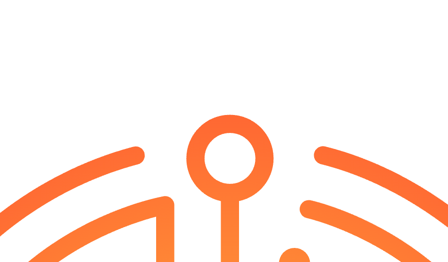

<!doctype html>
<html lang="es">
<head>
  <meta charset="utf-8">
  <meta name="viewport" content="width=device-width, initial-scale=1, viewport-fit=cover">
  <meta name="theme-color" content="#000000">
  <meta name="color-scheme" content="dark">
  <title>Gracias · Yucatech Festival 2026 — Nos vemos el 8 de abril de 2027</title>
  <meta name="description" content="Gracias por ser parte de Yucatech Festival 2026. Revive el evento en nuestra galería de fotos y prepárate: volvemos el 8 de abril de 2027.">
  <link rel="icon" type="image/svg+xml" href="assets/logos/isotipo-color.svg">

  <link rel="stylesheet" href="colors_and_type.css">
  <style>
    html, body { margin: 0; padding: 0; background: var(--yt-black); color: var(--yt-fg); font-family: var(--yt-font-body); overflow-x: hidden; }
    * { box-sizing: border-box; }
    img { max-width: 100%; height: auto; display: block; }
    button { font-family: inherit; }

    :root {
      --yt-page-pad: clamp(20px, 4vw, 48px);
      --yt-page-max: 1280px;
      --yt-section-py: clamp(72px, 10vw, 128px);
    }

    :focus-visible {
      outline: 3px solid var(--yt-yellow);
      outline-offset: 3px;
      border-radius: 2px;
    }

    @media (prefers-reduced-motion: reduce) {
      *, *::before, *::after {
        animation-duration: 0.001ms !important;
        animation-iteration-count: 1 !important;
        transition-duration: 0.001ms !important;
      }
    }

    /* Reusable keyframes */
    @keyframes yt-rotate { to { transform: rotate(360deg); } }
    @keyframes yt-rotate-rev { to { transform: rotate(-360deg); } }
    @keyframes yt-pulse-glow {
      0%, 100% { opacity: 0.6; transform: scale(1); }
      50% { opacity: 1; transform: scale(1.05); }
    }
    @keyframes yt-fade-up {
      from { opacity: 0; transform: translateY(20px); }
      to { opacity: 1; transform: translateY(0); }
    }
    @keyframes yt-shimmer {
      0% { background-position: -200% 50%; }
      100% { background-position: 200% 50%; }
    }
    @keyframes yt-scan {
      0%, 100% { transform: translateY(-100%); opacity: 0; }
      50% { opacity: 1; }
      100% { transform: translateY(100%); }
    }

    .yt-fade-up { animation: yt-fade-up 800ms var(--yt-ease-standard) both; }

    /* Selection */
    ::selection { background: var(--yt-orange); color: #000; }
  </style>

  <script src="https://unpkg.com/react@18.3.1/umd/react.development.js" integrity="sha384-hD6/rw4ppMLGNu3tX5cjIb+uRZ7UkRJ6BPkLpg4hAu/6onKUg4lLsHAs9EBPT82L" crossorigin="anonymous"></script>
  <script src="https://unpkg.com/react-dom@18.3.1/umd/react-dom.development.js" integrity="sha384-u6aeetuaXnQ38mYT8rp6sbXaQe3NL9t+IBXmnYxwkUI2Hw4bsp2Wvmx4yRQF1uAm" crossorigin="anonymous"></script>
  <script src="https://unpkg.com/@babel/standalone@7.29.0/babel.min.js" integrity="sha384-m08KidiNqLdpJqLq95G/LEi8Qvjl/xUYll3QILypMoQ65QorJ9Lvtp2RXYGBFj1y" crossorigin="anonymous"></script>
</head>
<body>
  <div id="root"></div>

  <script type="text/babel" data-presets="env,react">
  const { useState, useEffect, useRef } = React;

  /* ============================================================
     HEADER
     ============================================================ */
  function Header() {
    const [scrolled, setScrolled] = useState(false);
    useEffect(() => {
      const onScroll = () => setScrolled(window.scrollY > 40);
      window.addEventListener('scroll', onScroll, { passive: true });
      return () => window.removeEventListener('scroll', onScroll);
    }, []);

    return (
      <header style={{
        position: 'fixed', top: 0, left: 0, right: 0, zIndex: 50,
        height: 72, display: 'flex', alignItems: 'center', justifyContent: 'space-between',
        padding: '0 var(--yt-page-pad)',
        background: scrolled ? 'rgba(0,0,0,0.72)' : 'transparent',
        backdropFilter: scrolled ? 'blur(20px)' : 'none',
        borderBottom: scrolled ? '1px solid var(--yt-border)' : '1px solid transparent',
        transition: 'all 220ms var(--yt-ease-standard)',
      }}>
        <a href="#top" aria-label="Yucatech" style={{ display: 'flex', alignItems: 'center', textDecoration: 'none' }}>
          
        </a>
        <nav style={{ display: 'flex', gap: 28, alignItems: 'center' }}>
          <a href="#galeria" className="yt-nav-link" style={navLinkStyle}>Galería</a>
          <a href="#proxima" className="yt-nav-link" style={navLinkStyle}>2027</a>
          <a href="#galeria-full" style={{
            padding: '10px 20px', background: 'var(--yt-orange)', color: '#000',
            fontFamily: 'var(--yt-font-display)', fontSize: 12, fontWeight: 700,
            letterSpacing: '0.2em', textTransform: 'uppercase', textDecoration: 'none',
            borderRadius: 2, boxShadow: '0 0 24px rgba(236,102,40,0.45)',
          }}>Ver fotos →</a>
        </nav>
      </header>
    );
  }
  const navLinkStyle = {
    fontFamily: 'var(--yt-font-display)', fontSize: 12, fontWeight: 600,
    letterSpacing: '0.25em', textTransform: 'uppercase',
    color: 'var(--yt-fg-muted)', textDecoration: 'none',
    transition: 'color 120ms',
  };

  /* ============================================================
     HERO — GRACIAS
     ============================================================ */
  function GraciasHero() {
    return (
      <section id="top" aria-labelledby="gracias-title" style={{
        minHeight: '100vh', position: 'relative',
        display: 'flex', alignItems: 'center', justifyContent: 'center',
        padding: 'clamp(100px, 12vw, 140px) var(--yt-page-pad) 80px',
        background: 'radial-gradient(ellipse at 50% 35%, #2a0d00 0%, #0a0300 50%, #000 85%)',
        overflow: 'hidden',
      }}>
        {/* Grid texture */}
        <div aria-hidden="true" style={{
          position: 'absolute', inset: 0,
          backgroundImage: 'linear-gradient(rgba(236,102,40,0.05) 1px, transparent 1px), linear-gradient(90deg, rgba(236,102,40,0.05) 1px, transparent 1px)',
          backgroundSize: '48px 48px',
          maskImage: 'radial-gradient(ellipse at center, #000 25%, transparent 75%)',
        }}/>

        {/* Rotating rings */}
        <div aria-hidden="true" style={{
          position: 'absolute', top: '50%', left: '50%',
          width: 'min(90vw, 900px)', height: 'min(90vw, 900px)',
          transform: 'translate(-50%, -50%)',
          borderRadius: '50%', border: '1px solid rgba(236,102,40,0.12)',
          animation: 'yt-rotate 120s linear infinite',
        }}/>
        <div aria-hidden="true" style={{
          position: 'absolute', top: '50%', left: '50%',
          width: 'min(70vw, 700px)', height: 'min(70vw, 700px)',
          transform: 'translate(-50%, -50%)',
          borderRadius: '50%', border: '1px dashed rgba(255,191,0,0.08)',
          animation: 'yt-rotate-rev 180s linear infinite',
        }}/>

        <div style={{ position: 'relative', textAlign: 'center', maxWidth: 1100, width: '100%' }}>
          {/* Eyebrow */}
          <div className="yt-fade-up" style={{
            fontFamily: 'var(--yt-font-display)', fontSize: 'clamp(10px, 0.95vw, 13px)',
            color: 'var(--yt-orange)', letterSpacing: '0.4em', textTransform: 'uppercase',
            fontWeight: 600, marginBottom: 'clamp(20px, 3vw, 32px)',
          }}>
            Edición 2026 · Cerrada con éxito
          </div>

          {/* Isotipo */}
          

          {/* GRACIAS */}
          <h1 id="gracias-title" className="yt-fade-up" style={{
            fontFamily: 'var(--yt-font-display)',
            fontSize: 'clamp(80px, 18vw, 260px)',
            fontWeight: 800, letterSpacing: '0.04em',
            textTransform: 'uppercase', margin: '0 0 8px', lineHeight: 0.9,
            background: 'linear-gradient(180deg, #FFE9C4 0%, #FFBF00 40%, #EC6628 80%, #9C1021 100%)',
            WebkitBackgroundClip: 'text', backgroundClip: 'text', color: 'transparent',
            textShadow: '0 0 80px rgba(236,102,40,0.3)',
            animationDelay: '100ms',
          }}>
            Gracias
          </h1>

          {/* Subtitle */}
          <p className="yt-fade-up" style={{
            fontFamily: 'var(--yt-font-display)',
            fontSize: 'clamp(14px, 1.8vw, 24px)', fontWeight: 600,
            letterSpacing: '0.2em', textTransform: 'uppercase',
            color: 'var(--yt-fg)', margin: '0 0 clamp(32px, 4vw, 48px)',
            animationDelay: '200ms',
          }}>
            Por ser parte del Renacimiento Tecnológico
          </p>

          {/* Body message */}
          <p className="yt-fade-up" style={{
            fontFamily: 'var(--yt-font-body)', fontWeight: 300,
            fontSize: 'clamp(16px, 1.4vw, 20px)',
            lineHeight: 1.6, color: 'var(--yt-ink-8)',
            maxWidth: 720, margin: '0 auto clamp(40px, 5vw, 56px)',
            animationDelay: '300ms',
          }}>
            A quienes llenaron el Centro Internacional de Convenciones de Yucatán,
            a cada ponente, aliado, voluntario y curioso tecnológico:
            ustedes fueron el pulso del festival. El laberinto se completó
            porque ustedes trazaron el camino.
          </p>

          {/* Event stamp */}
          <div className="yt-fade-up" style={{
            display: 'inline-flex', flexDirection: 'column', alignItems: 'center',
            padding: '18px 36px',
            border: '1px solid rgba(236,102,40,0.4)',
            background: 'rgba(236,102,40,0.06)',
            borderRadius: 2,
            animationDelay: '400ms',
          }}>
            <div style={{
              fontFamily: 'var(--yt-font-display)', fontSize: 11,
              letterSpacing: '0.3em', textTransform: 'uppercase',
              color: 'var(--yt-orange)', fontWeight: 600, marginBottom: 6,
            }}>
              Yucatech Festival
            </div>
            <div style={{
              fontFamily: 'var(--yt-font-display)', fontSize: 'clamp(16px, 1.6vw, 22px)',
              letterSpacing: '0.18em', textTransform: 'uppercase',
              color: 'var(--yt-fg)', fontWeight: 700,
            }}>
              Abril 16, 2026 · Mérida, Yucatán
            </div>
          </div>
        </div>

        {/* Scroll indicator */}
        <div aria-hidden="true" style={{
          position: 'absolute', bottom: 32, left: '50%', transform: 'translateX(-50%)',
          display: 'flex', flexDirection: 'column', alignItems: 'center', gap: 10,
          color: 'var(--yt-fg-subtle)',
          fontFamily: 'var(--yt-font-display)', fontSize: 10,
          letterSpacing: '0.3em', textTransform: 'uppercase', fontWeight: 600,
        }}>
          <span>Revive 2026</span>
          <div style={{
            width: 1, height: 48,
            background: 'linear-gradient(to bottom, var(--yt-orange), transparent)',
          }}/>
        </div>
      </section>
    );
  }

  /* ============================================================
     STATS STRIP — 2026 recap numbers
     ============================================================ */
  function Stats() {
    const primary = [
      { n: '527', l: 'Participantes' },
      { n: '17',  l: 'Sesiones' },
      { n: '14', l: 'Horas de programa' },
      { n: '9',   l: 'Países' },
    ];
    const secondary = [
      { n: '11', l: 'Estados de México' },
      { n: '408', l: 'Comidas servidas' },
      { n: '325', l: 'Cenas servidas' },
    ];
    return (
      <section aria-label="Números del evento 2026" style={{
        padding: 'clamp(56px, 7vw, 96px) var(--yt-page-pad)',
        borderTop: '1px solid var(--yt-border)',
        borderBottom: '1px solid var(--yt-border)',
        background: 'var(--yt-ink-1)',
      }}>
        <div style={{ maxWidth: 'var(--yt-page-max)', margin: '0 auto' }}>
          <div style={{ textAlign: 'center', marginBottom: 'clamp(36px, 4vw, 56px)' }}>
            <p style={{
              fontFamily: 'var(--yt-font-display)', fontSize: 'clamp(10px, 0.95vw, 13px)',
              color: 'var(--yt-orange)', letterSpacing: '0.35em', textTransform: 'uppercase',
              fontWeight: 600, margin: '0 0 14px',
            }}>
              En números
            </p>
            <h2 style={{
              fontFamily: 'var(--yt-font-display)',
              fontSize: 'clamp(28px, 3.4vw, 44px)',
              fontWeight: 800, letterSpacing: '0.08em', textTransform: 'uppercase',
              margin: 0, color: 'var(--yt-fg)', lineHeight: 1,
            }}>
              Yucatech Festival 2026
            </h2>
          </div>

          {/* Primary stats — large */}
          <div style={{
            display: 'grid', gridTemplateColumns: 'repeat(auto-fit, minmax(180px, 1fr))',
            gap: 'clamp(24px, 3vw, 48px)',
            paddingBottom: 'clamp(32px, 4vw, 48px)',
            borderBottom: '1px solid var(--yt-border)',
          }}>
            {primary.map((s, i) => (
              <div key={i} style={{ textAlign: 'center' }}>
                <div style={{
                  fontFamily: 'var(--yt-font-display)',
                  fontSize: 'clamp(48px, 6vw, 88px)', fontWeight: 800,
                  letterSpacing: '0.02em', lineHeight: 1,
                  background: 'linear-gradient(180deg, #FFBF00 0%, #EC6628 100%)',
                  WebkitBackgroundClip: 'text', backgroundClip: 'text', color: 'transparent',
                  marginBottom: 12,
                }}>{s.n}</div>
                <div style={{
                  fontFamily: 'var(--yt-font-display)', fontSize: 11,
                  letterSpacing: '0.3em', textTransform: 'uppercase',
                  color: 'var(--yt-fg-muted)', fontWeight: 600,
                }}>{s.l}</div>
              </div>
            ))}
          </div>

          {/* Secondary stats — smaller */}
          <div style={{
            display: 'grid', gridTemplateColumns: 'repeat(auto-fit, minmax(180px, 1fr))',
            gap: 'clamp(18px, 2vw, 32px)',
            paddingTop: 'clamp(28px, 4vw, 40px)',
          }}>
            {secondary.map((s, i) => (
              <div key={i} style={{ textAlign: 'center' }}>
                <div style={{
                  fontFamily: 'var(--yt-font-display)',
                  fontSize: 'clamp(32px, 3.6vw, 52px)', fontWeight: 700,
                  letterSpacing: '0.02em', lineHeight: 1,
                  color: 'var(--yt-fg)',
                  marginBottom: 10,
                }}>{s.n}</div>
                <div style={{
                  fontFamily: 'var(--yt-font-display)', fontSize: 10,
                  letterSpacing: '0.28em', textTransform: 'uppercase',
                  color: 'var(--yt-fg-subtle)', fontWeight: 600,
                }}>{s.l}</div>
              </div>
            ))}
          </div>
        </div>
      </section>
    );
  }

  /* ============================================================
     ELEVATOR PITCH — dedicated section
     ============================================================ */
  function ElevatorPitch() {
    return (
      <section aria-labelledby="pitch-title" style={{
        padding: 'var(--yt-section-py) var(--yt-page-pad)',
        position: 'relative', overflow: 'hidden',
        background: 'linear-gradient(180deg, #0a0300 0%, #170600 50%, #0a0300 100%)',
        borderBottom: '1px solid var(--yt-border)',
      }}>
        {/* Decorative grid */}
        <div aria-hidden="true" style={{
          position: 'absolute', inset: 0,
          backgroundImage: 'linear-gradient(rgba(236,102,40,0.05) 1px, transparent 1px), linear-gradient(90deg, rgba(236,102,40,0.05) 1px, transparent 1px)',
          backgroundSize: '56px 56px',
          maskImage: 'radial-gradient(ellipse at 50% 50%, #000 20%, transparent 75%)',
        }}/>

        <div style={{
          maxWidth: 'var(--yt-page-max)', margin: '0 auto',
          position: 'relative',
        }}>
          <div style={{ textAlign: 'center', marginBottom: 'clamp(40px, 5vw, 64px)' }}>
            <p style={{
              fontFamily: 'var(--yt-font-display)', fontSize: 'clamp(10px, 0.95vw, 13px)',
              color: 'var(--yt-yellow)', letterSpacing: '0.4em', textTransform: 'uppercase',
              fontWeight: 600, margin: '0 0 18px',
            }}>
              Competencia · Yucatech 2026
            </p>
            <h2 id="pitch-title" style={{
              fontFamily: 'var(--yt-font-display)',
              fontSize: 'clamp(40px, 6vw, 88px)',
              fontWeight: 800, letterSpacing: '0.05em', textTransform: 'uppercase',
              margin: '0 0 20px', color: 'var(--yt-fg)', lineHeight: 0.95,
            }}>
              Elevator <span style={{
                background: 'var(--yt-grad-principal)',
                WebkitBackgroundClip: 'text', backgroundClip: 'text', color: 'transparent',
              }}>Pitch</span>
            </h2>
            <p style={{
              fontFamily: 'var(--yt-font-body)', fontWeight: 300,
              fontSize: 'clamp(15px, 1.25vw, 19px)', lineHeight: 1.6,
              color: 'var(--yt-ink-8)', maxWidth: 640, margin: '0 auto',
            }}>
              11 startups subieron al escenario con 7 minutos para convencer
              al jurado. Dos se llevaron la bolsa.
            </p>
          </div>

          {/* Prize card */}
          <div style={{
            maxWidth: 880, margin: '0 auto',
            border: '1px solid rgba(255,191,0,0.3)',
            background: 'linear-gradient(180deg, rgba(236,102,40,0.08) 0%, rgba(0,0,0,0.4) 100%)',
            borderRadius: 4,
            padding: 'clamp(32px, 5vw, 56px) clamp(24px, 4vw, 48px)',
            textAlign: 'center',
            boxShadow: '0 0 80px rgba(236,102,40,0.15), inset 0 0 0 1px rgba(255,255,255,0.03)',
          }}>
            <p style={{
              fontFamily: 'var(--yt-font-display)', fontSize: 11,
              letterSpacing: '0.35em', textTransform: 'uppercase',
              color: 'var(--yt-fg-muted)', fontWeight: 600,
              margin: '0 0 18px',
            }}>
              Bolsa total en premios
            </p>
            <div style={{
              fontFamily: 'var(--yt-font-display)',
              fontSize: 'clamp(56px, 9vw, 144px)', fontWeight: 800,
              letterSpacing: '0.02em', lineHeight: 1,
              background: 'var(--yt-grad-principal)',
              WebkitBackgroundClip: 'text', backgroundClip: 'text', color: 'transparent',
              marginBottom: 10,
              textShadow: '0 0 80px rgba(255,191,0,0.2)',
            }}>
              +$100,000
            </div>
            <div style={{
              fontFamily: 'var(--yt-font-display)', fontSize: 'clamp(16px, 1.8vw, 24px)',
              letterSpacing: '0.3em', textTransform: 'uppercase',
              color: 'var(--yt-orange)', fontWeight: 700,
              marginBottom: 'clamp(32px, 4vw, 48px)',
            }}>
              USD
            </div>

            {/* Divider */}
            <div style={{
              display: 'flex', alignItems: 'center', gap: 16,
              margin: 'clamp(20px, 3vw, 32px) auto',
              maxWidth: 360,
            }}>
              <div style={{ flex: 1, height: 1, background: 'var(--yt-border)' }}/>
              
              <div style={{ flex: 1, height: 1, background: 'var(--yt-border)' }}/>
            </div>

            {/* Three chips */}
            <div style={{
              display: 'grid', gridTemplateColumns: 'repeat(auto-fit, minmax(140px, 1fr))',
              gap: 'clamp(14px, 2vw, 24px)',
              marginTop: 8,
            }}>
              {[
                { n: '11', l: 'Participantes' },
                { n: '2',  l: 'Ganadores' },
                { n: '7min', l: 'Por pitch' },
              ].map((x, i) => (
                <div key={i} style={{
                  padding: '18px 12px',
                  border: '1px solid var(--yt-border)',
                  background: 'rgba(0,0,0,0.4)',
                  borderRadius: 2,
                }}>
                  <div style={{
                    fontFamily: 'var(--yt-font-display)',
                    fontSize: 'clamp(24px, 2.8vw, 36px)', fontWeight: 800,
                    letterSpacing: '0.02em', lineHeight: 1,
                    color: 'var(--yt-orange)',
                    marginBottom: 8,
                  }}>{x.n}</div>
                  <div style={{
                    fontFamily: 'var(--yt-font-display)', fontSize: 10,
                    letterSpacing: '0.28em', textTransform: 'uppercase',
                    color: 'var(--yt-fg-subtle)', fontWeight: 600,
                  }}>{x.l}</div>
                </div>
              ))}
            </div>
          </div>
        </div>
      </section>
    );
  }

  /* ============================================================
     GALERIA — mosaic + CTA to full photo library
     ============================================================ */
  function Galeria() {
    const [files, setFiles] = useState([]);
    const [loading, setLoading] = useState(true);
    // mode: 'init' | 'server' | 'empty' | 'picker' | 'loaded'
    const [mode, setMode] = useState('init');

    // On mount: try the local server; fall back to folder-picker mode
    useEffect(() => {
      // 1. Local dev server (node server.js) — dynamic, no manifest needed
      // 2. Static manifest (Cloudflare Pages) — generated by generate-manifest.js
      // 3. Folder picker — browser fallback when neither is available
      fetch('/gallery-files')
        .then(r => { if (!r.ok) throw new Error(); return r.json(); })
        .then(data => {
          const list = Array.isArray(data) ? data : [];
          setFiles(list);
          setMode(list.length ? 'server' : 'empty');
          setLoading(false);
        })
        .catch(() => fetch('/images/manifest.json')
          .then(r => { if (!r.ok) throw new Error(); return r.json(); })
          .then(data => {
            const list = Array.isArray(data) ? data : [];
            setFiles(list);
            setMode(list.length ? 'server' : 'empty');
            setLoading(false);
          })
          .catch(() => {
            setMode('picker');
            setLoading(false);
          })
        );
    }, []);

    const pickFolder = async () => {
      if (!window.showDirectoryPicker) {
        alert('Tu navegador no soporta selección de carpetas.\nUsa Chrome / Edge, o inicia el servidor con:\n\n  node server.js');
        return;
      }
      try {
        const handle = await window.showDirectoryPicker({ mode: 'read' });
        setLoading(true);
        const IMAGE_EXTS = new Set(['jpg','jpeg','png','gif','webp','avif','heic']);
        const VIDEO_EXTS = new Set(['mp4','mov','webm','m4v','avi']);
        const newFiles = [];
        for await (const [name, fh] of handle.entries()) {
          if (fh.kind !== 'file') continue;
          const ext = name.split('.').pop().toLowerCase();
          const isImg = IMAGE_EXTS.has(ext);
          const isVid = VIDEO_EXTS.has(ext);
          if (!isImg && !isVid) continue;
          const file = await fh.getFile();
          newFiles.push({ name, url: URL.createObjectURL(file), type: isVid ? 'video' : 'image' });
        }
        newFiles.sort((a, b) => a.name.localeCompare(b.name, undefined, { numeric: true }));
        setFiles(newFiles);
        setMode('loaded');
        setLoading(false);
      } catch (e) {
        if (e.name !== 'AbortError') console.error(e);
        setLoading(false);
      }
    };

    // Placeholder tiles shown while the server is not yet connected
    const placeholder = [
      { url: 'assets/brand-examples/Anuncio-digital.jpg', name: 'Noche inaugural', type: 'image', span: 2 },
      { url: 'assets/brand-examples/Poster.jpg',          name: 'Apertura · Sala 1', type: 'image' },
      { url: 'assets/brand-examples/Banner.jpg',          name: 'Escenario principal', type: 'image' },
      { url: 'assets/brand-examples/Merchandising.jpg',   name: 'Merch oficial', type: 'image' },
      { url: 'assets/brand-examples/Senaletica.jpg',      name: 'Señalética', type: 'image' },
      { url: 'assets/brand-examples/Fondo-de-pantalla.jpg', name: 'Instalación de luz', type: 'image' },
    ];

    const usingReal        = files.length > 0;
    const displayFiles     = usingReal ? files : (mode === 'empty' ? [] : placeholder);
    const usingPlaceholders = !usingReal && mode !== 'empty';

    return (
      <section id="galeria" aria-labelledby="galeria-title" style={{
        padding: 'var(--yt-section-py) var(--yt-page-pad)',
        position: 'relative', overflow: 'hidden',
        background: 'linear-gradient(180deg, #000 0%, #0a0300 100%)',
        borderTop: '1px solid var(--yt-border)',
      }}>
        {/* Watermark isotipo */}
        

        <div style={{ maxWidth: 'var(--yt-page-max)', margin: '0 auto', position: 'relative' }}>
          {/* Heading */}
          <div style={{ textAlign: 'center', marginBottom: 'clamp(36px, 4vw, 56px)' }}>
            <p style={{
              fontFamily: 'var(--yt-font-display)', fontSize: 'clamp(10px, 0.95vw, 13px)',
              color: 'var(--yt-orange)', letterSpacing: '0.35em', textTransform: 'uppercase',
              fontWeight: 600, margin: '0 0 14px',
            }}>
              Memoria visual · 2026
            </p>
            <h2 id="galeria-title" style={{
              fontFamily: 'var(--yt-font-display)',
              fontSize: 'clamp(40px, 6vw, 88px)',
              fontWeight: 800, letterSpacing: '0.05em', textTransform: 'uppercase',
              margin: '0 0 20px', color: 'var(--yt-fg)', lineHeight: 0.95,
            }}>
              Así se vivió<br/>
              <span style={{
                background: 'var(--yt-grad-principal)',
                WebkitBackgroundClip: 'text', backgroundClip: 'text', color: 'transparent',
              }}>el festival</span>
            </h2>
            <p style={{
              fontFamily: 'var(--yt-font-body)', fontWeight: 300,
              fontSize: 'clamp(15px, 1.25vw, 19px)', lineHeight: 1.6,
              color: 'var(--yt-ink-8)', maxWidth: 640, margin: '0 auto',
            }}>
              Keynotes, talleres, showcases, elevator pitch y la fiesta de
              clausura. Descarga libremente las fotografías para compartir
              tu experiencia.
            </p>
          </div>

          {/* ── State: loading ── */}
          {loading && (
            <div style={{
              textAlign: 'center', padding: '40px 0',
              fontFamily: 'var(--yt-font-display)', fontSize: 11,
              letterSpacing: '0.3em', textTransform: 'uppercase',
              color: 'var(--yt-fg-muted)',
            }}>
              Cargando galería…
            </div>
          )}

          {/* ── State: no server + no files yet (picker prompt) ── */}
          {!loading && mode === 'picker' && !usingReal && (
            <div style={{
              textAlign: 'center', marginBottom: 'clamp(24px, 3vw, 36px)',
              padding: '28px 24px',
              border: '1px dashed rgba(236,102,40,0.3)',
              borderRadius: 4, background: 'rgba(236,102,40,0.03)',
              display: 'flex', flexDirection: 'column', alignItems: 'center', gap: 16,
            }}>
              <p style={{
                fontFamily: 'var(--yt-font-body)', fontWeight: 300,
                fontSize: 14, color: 'var(--yt-fg-muted)', margin: 0, lineHeight: 1.7,
              }}>
                Para carga automática inicia el servidor:{' '}
                <code style={{ fontFamily: 'var(--yt-font-mono)', color: 'var(--yt-yellow)', fontSize: 13 }}>node server.js</code>
                <br/>O selecciona la carpeta <code style={{ fontFamily: 'var(--yt-font-mono)', color: 'var(--yt-yellow)', fontSize: 13 }}>images/</code> directamente:
              </p>
              <button onClick={pickFolder} style={{
                padding: '12px 28px', background: 'transparent',
                color: 'var(--yt-orange)', border: '1px solid var(--yt-orange)',
                fontFamily: 'var(--yt-font-display)', fontSize: 11, fontWeight: 700,
                letterSpacing: '0.22em', textTransform: 'uppercase',
                borderRadius: 2, cursor: 'pointer',
                transition: 'all 220ms var(--yt-ease-standard)',
              }}
              onMouseEnter={e => { e.currentTarget.style.background = 'var(--yt-orange)'; e.currentTarget.style.color = '#000'; }}
              onMouseLeave={e => { e.currentTarget.style.background = 'transparent'; e.currentTarget.style.color = 'var(--yt-orange)'; }}
              >
                Seleccionar carpeta images/
              </button>
            </div>
          )}

          {/* ── State: folder is empty ── */}
          {!loading && mode === 'empty' && (
            <div style={{
              textAlign: 'center', marginBottom: 40,
              padding: '32px', border: '1px dashed var(--yt-border)', borderRadius: 4,
            }}>
              <p style={{
                fontFamily: 'var(--yt-font-mono)', fontSize: 13,
                color: 'var(--yt-fg-muted)', margin: 0, letterSpacing: '0.06em',
              }}>
                La carpeta <span style={{ color: 'var(--yt-yellow)' }}>images/</span> está vacía.
                Agrega fotos y videos, luego recarga la página.
              </p>
            </div>
          )}

          {/* ── File count + change-folder button ── */}
          {!loading && usingReal && (
            <div style={{
              display: 'flex', alignItems: 'center', justifyContent: 'space-between',
              marginBottom: 'clamp(14px, 1.5vw, 20px)',
            }}>
              <span style={{
                fontFamily: 'var(--yt-font-mono)', fontSize: 12,
                color: 'var(--yt-fg-muted)', letterSpacing: '0.08em',
              }}>
                {files.length} {files.length === 1 ? 'archivo' : 'archivos'} ·{' '}
                {files.filter(f => f.type === 'image').length} fotos ·{' '}
                {files.filter(f => f.type === 'video').length} videos
              </span>
              {mode === 'loaded' && (
                <button onClick={pickFolder} style={{
                  padding: '7px 16px', background: 'transparent',
                  fontFamily: 'var(--yt-font-display)', fontSize: 10,
                  letterSpacing: '0.22em', textTransform: 'uppercase', fontWeight: 600,
                  color: 'var(--yt-fg-muted)', border: '1px solid var(--yt-border)',
                  borderRadius: 2, cursor: 'pointer',
                  transition: 'all 180ms',
                }}
                onMouseEnter={e => { e.currentTarget.style.borderColor = 'var(--yt-orange)'; e.currentTarget.style.color = 'var(--yt-orange)'; }}
                onMouseLeave={e => { e.currentTarget.style.borderColor = 'var(--yt-border)'; e.currentTarget.style.color = 'var(--yt-fg-muted)'; }}
                >Cambiar carpeta</button>
              )}
            </div>
          )}

          {/* ── Mosaic grid ── */}
          {!loading && displayFiles.length > 0 && (
            <div className="yt-gallery-mosaic" style={{
              display: 'grid', gridTemplateColumns: 'repeat(4, 1fr)',
              gap: 10, gridAutoRows: 'clamp(160px, 18vw, 240px)',
              marginBottom: 'clamp(40px, 5vw, 64px)',
            }}>
              {displayFiles.map((im, i) => {
                // First item spans 2×2 when: it's a placeholder OR we have 5+ real files
                const spanTwo = im.span === 2 || (i === 0 && !usingPlaceholders && displayFiles.length >= 5);
                const label   = im.name ? im.name.replace(/\.[^.]+$/, '').replace(/[-_]/g, ' ') : '';
                return (
                  <figure key={`${im.url}-${i}`} style={{
                    margin: 0, position: 'relative', overflow: 'hidden',
                    borderRadius: 4, border: '1px solid var(--yt-border)',
                    gridColumn: spanTwo ? 'span 2' : 'span 1',
                    gridRow:    spanTwo ? 'span 2' : 'span 1',
                    cursor: 'pointer', background: '#0a0300',
                  }}>
                    {im.type === 'video' ? (
                      <video src={im.url} autoPlay muted loop playsInline
                        style={{ width: '100%', height: '100%', objectFit: 'cover' }}
                      />
                    ) : (
                       e.currentTarget.style.transform = 'scale(1.06)'}
                        onMouseLeave={e => e.currentTarget.style.transform = 'scale(1)'}
                      />
                    )}
                    <figcaption style={{
                      position: 'absolute', bottom: 0, left: 0, right: 0,
                      padding: '40px 14px 12px',
                      background: 'linear-gradient(to top, rgba(0,0,0,0.9) 0%, rgba(0,0,0,0) 100%)',
                      fontFamily: 'var(--yt-font-display)', fontSize: 10,
                      letterSpacing: '0.25em', textTransform: 'uppercase',
                      color: 'var(--yt-fg)', fontWeight: 600,
                    }}>
                      {label}
                      {im.type === 'video' && (
                        <span aria-hidden="true" style={{ marginLeft: 8, opacity: 0.8 }}>▶</span>
                      )}
                    </figcaption>
                  </figure>
                );
              })}
            </div>
          )}

          {/* CTA row */}
          <div style={{
            display: 'flex', alignItems: 'center', justifyContent: 'space-between',
            gap: 28, flexWrap: 'wrap',
            padding: 'clamp(28px, 3vw, 40px) clamp(24px, 3vw, 40px)',
            border: '1px solid rgba(236,102,40,0.3)',
            background: 'rgba(236,102,40,0.04)',
            borderRadius: 4,
          }}>
            <div style={{ flex: '1 1 320px' }}>
              <div style={{
                fontFamily: 'var(--yt-font-display)', fontSize: 11,
                letterSpacing: '0.35em', textTransform: 'uppercase',
                color: 'var(--yt-yellow)', fontWeight: 600, marginBottom: 8,
              }}>
                Librería completa
              </div>
              <div style={{
                fontFamily: 'var(--yt-font-display)',
                fontSize: 'clamp(22px, 2.4vw, 32px)', fontWeight: 700,
                letterSpacing: '0.05em', textTransform: 'uppercase',
                color: 'var(--yt-fg)', marginBottom: 10, lineHeight: 1.1,
              }}>
                {usingReal
                  ? `${files.length} archivos en la galería`
                  : '+1,850 fotografías del evento'}
              </div>
              <div style={{
                fontFamily: 'var(--yt-font-mono)', fontSize: 13,
                color: 'var(--yt-fg-muted)', letterSpacing: '0.05em',
              }}>
                photos.yuca.tech/2026
              </div>
            </div>

            <a
              href="https://photos.yuca.tech/2026"
              target="_blank" rel="noopener"
              style={{
                display: 'inline-flex', alignItems: 'center', gap: 14,
                padding: '20px 32px',
                background: 'var(--yt-orange)', color: '#000',
                fontFamily: 'var(--yt-font-display)', fontSize: 14, fontWeight: 700,
                letterSpacing: '0.22em', textTransform: 'uppercase',
                borderRadius: 2, textDecoration: 'none',
                boxShadow: '0 0 40px rgba(236,102,40,0.5)',
                transition: 'all 220ms var(--yt-ease-standard)',
              }}
              onMouseEnter={e => {
                e.currentTarget.style.transform = 'translateY(-2px)';
                e.currentTarget.style.boxShadow = '0 0 60px rgba(236,102,40,0.75)';
              }}
              onMouseLeave={e => {
                e.currentTarget.style.transform = 'translateY(0)';
                e.currentTarget.style.boxShadow = '0 0 40px rgba(236,102,40,0.5)';
              }}
            >
              <svg width="18" height="18" viewBox="0 0 24 24" fill="none" stroke="currentColor" strokeWidth="2.2" strokeLinecap="square">
                <rect x="3" y="5" width="18" height="14" rx="1"/>
                <circle cx="9" cy="10.5" r="1.5" fill="currentColor" stroke="none"/>
                <path d="M3 17l5-5 4 4 3-3 6 6"/>
              </svg>
              Abrir librería de fotos
              <span aria-hidden="true" style={{ fontSize: 18, lineHeight: 1 }}>→</span>
            </a>
          </div>
        </div>

        <style>{`
          @media (max-width: 720px) {
            .yt-gallery-mosaic { grid-template-columns: repeat(2, 1fr) !important; }
          }
        `}</style>
      </section>
    );
  }

  /* ============================================================
     PRENSA — press coverage
     ============================================================ */
  function Prensa() {
    const notes = [
      {
        outlet: 'Quadratín Yucatán',
        date: '16 ABR 2026',
        tag: 'Cobertura',
        title: 'Mérida se consolida como nuevo epicentro tecnológico con el Yucatech Festival',
        excerpt: 'La capital yucateca se convierte en polo estratégico para el desarrollo de IA, ciberseguridad y ciencia de datos.',
        url: 'https://yucatan.quadratin.com.mx/merida/merida-se-consolida-como-nuevo-epicentro-tecnologico-con-el-yucatech-festival/',
      },
      {
        outlet: 'Quadratín Bajío',
        date: '16 ABR 2026',
        tag: 'Cobertura',
        title: 'Mérida se consolida como nuevo epicentro tecnológico con el Yucatech Fest',
        excerpt: 'Mérida se posiciona como polo tecnológico nacional al atraer talento, empresas y eventos internacionales del sector digital.',
        url: 'https://bajio.quadratin.com.mx/merida-se-consolida-como-nuevo-epicentro-tecnologico-con-el-yucatech-fest/',
      },
      {
        outlet: 'eSemanal',
        date: '10 ABR 2026',
        tag: 'Industria',
        title: 'Yucatech Festival 2026 articula innovación, talento y negocio',
        excerpt: 'Ignia Cloud como patrocinador estratégico y el papel de Mérida como nuevo hub tecnológico del sureste.',
        url: 'https://esemanal.mx/2026/04/yucatech-festival-2026-articula-innovacion-talento-y-negocio-con-participacion-de-ignia-cloud/',
      },
      {
        outlet: 'MNI Noticias',
        date: '9 ABR 2026',
        tag: 'Patrocinadores',
        title: 'Ignia Cloud estará presente en Yucatech Festival 2026',
        excerpt: 'El CIC se convertirá en el núcleo de la innovación tecnológica en la primera edición del festival.',
        url: 'https://mninoticias.com/ignia-cloud-estara-presente-en-yucatech-festival-2026/',
      },
      {
        outlet: 'Mundo Ejecutivo',
        date: '6 ABR 2026',
        tag: 'Recta final',
        title: 'Yucatech Festival 2026 llega a la recta final',
        excerpt: '500+ tomadores de decisiones y líderes de tecnología se reunirán el 16 de abril para materializar alianzas estratégicas.',
        url: 'https://www.mundoejecutivo.com.mx/actualidad/yucatech-festival-2026-llega-a-la-recta-final/',
      },
      {
        outlet: 'NotiMx',
        date: '6 ABR 2026',
        tag: 'Recta final',
        title: 'Yucatech Festival 2026 llega a la recta final',
        excerpt: 'Cumbre de tecnología, negocios e innovación que posiciona a Mérida como el nuevo hub digital de México.',
        url: 'https://www.notimx.mx/2026/04/yucatech-festival-2026-llega-la-recta.html',
      },
      {
        outlet: 'El Heraldo de México',
        date: '26 MAR 2026',
        tag: 'Nacional',
        title: 'Yucatech Festival 2026: evento de innovación y negocios en Mérida',
        excerpt: 'Primera edición que reunirá a líderes en IA, ciberseguridad, emprendedores y directivos.',
        url: 'https://heraldodemexico.com.mx/nacional/2026/3/26/yucatech-festival-2026-evento-de-innovacion-negocios-en-merida-785977.html',
      },
      {
        outlet: 'Pymempresario',
        date: '2 MAR 2026',
        tag: 'Agenda',
        title: 'IA, ciberseguridad y fintech como palancas reales de crecimiento',
        excerpt: 'Análisis de la agenda 2026: cuatro ejes temáticos, 25 ponentes y herramientas concretas para PyMEs mexicanas.',
        url: 'https://www.pymempresario.com/yucatech-festival-2026-ia-ciberseguridad-y-fintech-como-palancas-reales-de-crecimiento-para-pymes-mexicanas/',
      },
      {
        outlet: 'MNI Noticias',
        date: '28 FEB 2026',
        tag: 'Ponentes',
        title: 'Yucatech Festival 2026 presenta a sus ponentes de talla mundial',
        excerpt: 'Desde el creador de Waze hasta los referentes más influyentes del desarrollo y las Fintech en un mismo escenario.',
        url: 'https://mninoticias.com/yucatech-festival-2026-presenta-a-sus-ponentes-de-talla-mundial/',
      },
      {
        outlet: 'DPL News',
        date: '1 NOV 2025',
        tag: 'Anuncio',
        title: 'Ignia Cloud promueve Yucatech Festival 2026',
        excerpt: 'Festival que unirá innovación, inversión y talento digital — 500+ líderes y un Pitch Hour con bolsa de USD 75 mil.',
        url: 'https://dplnews.com/ignia-cloud-promueve-yucatech-festival-2026-que-unira-innovacion-inversion-y-talento-digital/',
      },
      {
        outlet: 'Pymempresario',
        date: '27 OCT 2025',
        tag: 'Anuncio',
        title: 'La cita que convertirá a Mérida en el nuevo epicentro de innovación en América Latina',
        excerpt: '25 ponentes, 30+ stands y la visión de conectar innovación con propósito en el sureste mexicano.',
        url: 'https://www.pymempresario.com/yucatech-festival-2026-la-cita-que-convertira-a-merida-en-el-nuevo-epicentro-de-innovacion-y-negocios-tecnologicos-en-america-latina/',
      },
    ];

    return (
      <section id="prensa" aria-labelledby="prensa-title" style={{
        padding: 'var(--yt-section-py) var(--yt-page-pad)',
        position: 'relative', overflow: 'hidden',
        background: '#05030a',
        borderTop: '1px solid var(--yt-border)',
      }}>
        <div style={{ maxWidth: 'var(--yt-page-max)', margin: '0 auto' }}>

          {/* Heading */}
          <div style={{
            display: 'flex', alignItems: 'flex-end', justifyContent: 'space-between',
            gap: 24, flexWrap: 'wrap', marginBottom: 'clamp(32px, 4vw, 56px)',
          }}>
            <div style={{ flex: '1 1 520px' }}>
              <p style={{
                fontFamily: 'var(--yt-font-display)', fontSize: 'clamp(10px, 0.95vw, 13px)',
                color: 'var(--yt-orange)', letterSpacing: '0.35em', textTransform: 'uppercase',
                fontWeight: 600, margin: '0 0 14px',
              }}>
                Dicen de nosotros · 2026
              </p>
              <h2 id="prensa-title" style={{
                fontFamily: 'var(--yt-font-display)',
                fontSize: 'clamp(36px, 5.5vw, 80px)',
                fontWeight: 800, letterSpacing: '0.05em', textTransform: 'uppercase',
                margin: 0, color: 'var(--yt-fg)', lineHeight: 0.95,
              }}>
                En los<br/>
                <span style={{
                  background: 'var(--yt-grad-principal)',
                  WebkitBackgroundClip: 'text', backgroundClip: 'text', color: 'transparent',
                }}>medios</span>
              </h2>
            </div>
            <div style={{
              fontFamily: 'var(--yt-font-mono)', fontSize: 13,
              color: 'var(--yt-fg-muted)', letterSpacing: '0.08em',
              textAlign: 'right', lineHeight: 1.6,
            }}>
              <div style={{ color: 'var(--yt-yellow)', fontSize: 32, fontWeight: 700,
                fontFamily: 'var(--yt-font-display)', letterSpacing: '0.05em' }}>
                {notes.length}+
              </div>
              notas publicadas<br/>
              en medios nacionales
            </div>
          </div>

          {/* Ticker strip of outlets */}
          <div style={{
            display: 'flex', flexWrap: 'wrap', gap: 12,
            padding: '18px 0',
            borderTop: '1px solid var(--yt-border)',
            borderBottom: '1px solid var(--yt-border)',
            marginBottom: 'clamp(32px, 4vw, 48px)',
            justifyContent: 'center',
          }}>
            {['Quadratín', 'El Heraldo de México', 'DPL News', 'Mundo Ejecutivo', 'Pymempresario', 'MNI Noticias', 'eSemanal', 'NotiMx'].map((o, i) => (
              <span key={i} style={{
                fontFamily: 'var(--yt-font-display)', fontSize: 11,
                letterSpacing: '0.28em', textTransform: 'uppercase',
                color: 'var(--yt-fg-muted)', fontWeight: 600,
                padding: '6px 14px',
                border: '1px solid var(--yt-border)', borderRadius: 2,
              }}>{o}</span>
            ))}
          </div>

          {/* Notes grid */}
          <div className="yt-press-grid" style={{
            display: 'grid', gridTemplateColumns: 'repeat(3, 1fr)',
            gap: 14,
          }}>
            {notes.map((n, i) => (
              <a key={i} href={n.url} target="_blank" rel="noopener"
                style={{
                  display: 'flex', flexDirection: 'column',
                  padding: '22px 22px 20px',
                  background: 'rgba(255,255,255,0.02)',
                  border: '1px solid var(--yt-border)',
                  borderRadius: 3,
                  textDecoration: 'none',
                  transition: 'all 220ms var(--yt-ease-standard)',
                  minHeight: 220,
                }}
                onMouseEnter={e => {
                  e.currentTarget.style.borderColor = 'var(--yt-orange)';
                  e.currentTarget.style.background = 'rgba(236,102,40,0.04)';
                  e.currentTarget.style.transform = 'translateY(-3px)';
                }}
                onMouseLeave={e => {
                  e.currentTarget.style.borderColor = 'var(--yt-border)';
                  e.currentTarget.style.background = 'rgba(255,255,255,0.02)';
                  e.currentTarget.style.transform = 'translateY(0)';
                }}
              >
                <div style={{
                  display: 'flex', alignItems: 'center', justifyContent: 'space-between',
                  marginBottom: 18, gap: 8,
                }}>
                  <div style={{
                    fontFamily: 'var(--yt-font-display)', fontSize: 11,
                    letterSpacing: '0.3em', textTransform: 'uppercase',
                    color: 'var(--yt-orange)', fontWeight: 700,
                  }}>
                    {n.outlet}
                  </div>
                  <div style={{
                    fontFamily: 'var(--yt-font-mono)', fontSize: 10,
                    color: 'var(--yt-fg-muted)', letterSpacing: '0.1em',
                  }}>
                    {n.date}
                  </div>
                </div>

                <div style={{
                  fontFamily: 'var(--yt-font-display)', fontSize: 10,
                  letterSpacing: '0.25em', textTransform: 'uppercase',
                  color: 'var(--yt-yellow)', fontWeight: 600,
                  marginBottom: 10,
                }}>
                  · {n.tag}
                </div>

                <div style={{
                  fontFamily: 'var(--yt-font-display)',
                  fontSize: 'clamp(15px, 1.2vw, 18px)',
                  fontWeight: 700, lineHeight: 1.25,
                  color: 'var(--yt-fg)',
                  letterSpacing: '0.01em',
                  marginBottom: 12,
                  textWrap: 'pretty',
                }}>
                  {n.title}
                </div>

                <div style={{
                  fontFamily: 'var(--yt-font-body)', fontWeight: 300,
                  fontSize: 13, lineHeight: 1.55,
                  color: 'var(--yt-ink-8)',
                  flex: 1,
                }}>
                  {n.excerpt}
                </div>

                <div style={{
                  marginTop: 18, paddingTop: 14,
                  borderTop: '1px dashed var(--yt-border)',
                  display: 'flex', alignItems: 'center', justifyContent: 'space-between',
                  fontFamily: 'var(--yt-font-display)', fontSize: 11,
                  letterSpacing: '0.22em', textTransform: 'uppercase',
                  color: 'var(--yt-fg-muted)', fontWeight: 600,
                }}>
                  Leer nota
                  <span aria-hidden="true" style={{ fontSize: 14 }}>↗</span>
                </div>
              </a>
            ))}
          </div>

          {/* Footer note */}
          <div style={{
            marginTop: 'clamp(36px, 4vw, 56px)',
            textAlign: 'center',
            fontFamily: 'var(--yt-font-mono)', fontSize: 12,
            color: 'var(--yt-fg-muted)', letterSpacing: '0.08em',
          }}>
            ¿Periodista? Escríbenos a{' '}
            <a href="mailto:prensa@yuca.tech" style={{
              color: 'var(--yt-orange)', textDecoration: 'none',
              borderBottom: '1px solid var(--yt-orange)',
            }}>prensa@yuca.tech</a>
            {' '}para el kit de prensa 2027.
          </div>
        </div>

        <style>{`
          @media (max-width: 980px) {
            .yt-press-grid { grid-template-columns: repeat(2, 1fr) !important; }
          }
          @media (max-width: 640px) {
            .yt-press-grid { grid-template-columns: 1fr !important; }
          }
        `}</style>
      </section>
    );
  }

  /* ============================================================
     TRANSITION — "Y viene lo que sigue"
     ============================================================ */
  function Transition() {
    return (
      <section aria-hidden="true" style={{
        padding: 'clamp(48px, 8vw, 96px) var(--yt-page-pad)',
        textAlign: 'center', position: 'relative', overflow: 'hidden',
        background: '#000',
      }}>
        <div style={{
          display: 'inline-flex', alignItems: 'center', gap: 24,
          fontFamily: 'var(--yt-font-display)', fontSize: 'clamp(12px, 1.1vw, 16px)',
          letterSpacing: '0.4em', textTransform: 'uppercase',
          color: 'var(--yt-fg-muted)', fontWeight: 600,
        }}>
          <span style={{ width: 'clamp(30px, 8vw, 80px)', height: 1, background: 'var(--yt-border-strong)' }}/>
          Pero esto apenas empieza
          <span style={{ width: 'clamp(30px, 8vw, 80px)', height: 1, background: 'var(--yt-border-strong)' }}/>
        </div>
      </section>
    );
  }

  /* ============================================================
     2027 ANNOUNCEMENT + COUNTDOWN
     ============================================================ */
  function Proxima2027() {
    // Target: April 8, 2027, 09:00 Mérida (CST, UTC-6)
    const target = new Date('2027-04-08T09:00:00-06:00').getTime();
    const [now, setNow] = useState(Date.now());
    useEffect(() => {
      const tm = setInterval(() => setNow(Date.now()), 1000);
      return () => clearInterval(tm);
    }, []);
    const diff = Math.max(0, target - now);
    const d = Math.floor(diff / 86400000);
    const h = Math.floor((diff % 86400000) / 3600000);
    const m = Math.floor((diff % 3600000) / 60000);
    const s = Math.floor((diff % 60000) / 1000);

    const Cell = ({ n, l }) => (
      <div style={{ textAlign: 'center', minWidth: 84 }}>
        <div style={{
          fontFamily: 'var(--yt-font-display)',
          fontSize: 'clamp(44px, 7vw, 104px)', fontWeight: 800,
          letterSpacing: '0.04em', lineHeight: 1,
          color: 'var(--yt-orange)',
          textShadow: '0 0 48px rgba(236,102,40,0.5)',
          fontVariantNumeric: 'tabular-nums',
        }}>{String(n).padStart(2, '0')}</div>
        <div style={{
          fontFamily: 'var(--yt-font-display)', fontSize: 11,
          letterSpacing: '0.3em', textTransform: 'uppercase',
          color: 'var(--yt-fg-muted)', marginTop: 12, fontWeight: 600,
        }}>{l}</div>
      </div>
    );

    return (
      <section id="proxima" aria-labelledby="proxima-title" style={{
        padding: 'var(--yt-section-py) var(--yt-page-pad)',
        textAlign: 'center', position: 'relative', overflow: 'hidden',
        background: 'radial-gradient(ellipse at 50% 30%, #1f0a00 0%, #0a0300 55%, #000 85%)',
        borderTop: '1px solid var(--yt-border)',
      }}>
        {/* Scanning line effect */}
        <div aria-hidden="true" style={{
          position: 'absolute', inset: 0,
          background: 'linear-gradient(180deg, transparent 0%, rgba(236,102,40,0.06) 50%, transparent 100%)',
          height: '30%',
          animation: 'yt-scan 8s ease-in-out infinite',
          pointerEvents: 'none',
        }}/>

        <div style={{ position: 'relative', maxWidth: 1100, margin: '0 auto' }}>
          <p style={{
            fontFamily: 'var(--yt-font-display)', fontSize: 'clamp(10px, 0.95vw, 13px)',
            color: 'var(--yt-yellow)', letterSpacing: '0.4em', textTransform: 'uppercase',
            fontWeight: 600, margin: '0 0 20px',
          }}>
            La próxima edición
          </p>

          <h2 id="proxima-title" style={{
            fontFamily: 'var(--yt-font-display)',
            fontSize: 'clamp(48px, 8vw, 128px)',
            fontWeight: 800, letterSpacing: '0.05em',
            textTransform: 'uppercase',
            margin: '0 0 32px', lineHeight: 0.95, color: 'var(--yt-fg)',
          }}>
            Nos vemos<br/>
            <span style={{
              background: 'var(--yt-grad-principal)',
              WebkitBackgroundClip: 'text', backgroundClip: 'text', color: 'transparent',
            }}>el 8 de abril</span><br/>
            de 2027
          </h2>

          {/* Date ticker strip */}
          <div style={{
            display: 'inline-flex', alignItems: 'center', gap: 'clamp(14px, 2vw, 28px)',
            padding: '16px 28px',
            border: '1px solid rgba(236,102,40,0.35)',
            background: 'rgba(236,102,40,0.05)',
            borderRadius: 2,
            marginBottom: 'clamp(48px, 6vw, 72px)',
            flexWrap: 'wrap', justifyContent: 'center',
          }}>
            <DateChip label="Día" value="08" />
            <Sep/>
            <DateChip label="Mes" value="Abril" />
            <Sep/>
            <DateChip label="Año" value="2027" />
            <Sep/>
            <DateChip label="Sede" value="CIC Yucatán" />
          </div>

          {/* Countdown */}
          <div role="timer" aria-live="off"
            aria-label={`Faltan ${d} días, ${h} horas, ${m} minutos, ${s} segundos`}
            style={{
              display: 'flex', justifyContent: 'center',
              gap: 'clamp(18px, 4vw, 64px)', flexWrap: 'wrap',
              marginBottom: 'clamp(40px, 5vw, 56px)',
            }}>
            <Cell n={d} l="Días"/>
            <Cell n={h} l="Horas"/>
            <Cell n={m} l="Minutos"/>
            <Cell n={s} l="Segundos"/>
          </div>

          <p style={{
            fontFamily: 'var(--yt-font-body)', fontWeight: 300,
            fontSize: 'clamp(15px, 1.25vw, 19px)', lineHeight: 1.6,
            color: 'var(--yt-ink-8)', maxWidth: 640, margin: '0 auto 36px',
          }}>
            Un nuevo capítulo del laberinto. Nuevos ponentes,
            nuevas salas, la misma obsesión por unir herencia maya
            y vanguardia tecnológica.
          </p>
        </div>
      </section>
    );
  }
  function Sep() {
    return <span style={{ width: 1, height: 24, background: 'var(--yt-border-strong)' }} aria-hidden="true"/>;
  }
  function DateChip({ label, value }) {
    return (
      <div style={{ textAlign: 'left' }}>
        <div style={{
          fontFamily: 'var(--yt-font-display)', fontSize: 9,
          letterSpacing: '0.3em', textTransform: 'uppercase',
          color: 'var(--yt-fg-subtle)', fontWeight: 600, marginBottom: 4,
        }}>{label}</div>
        <div style={{
          fontFamily: 'var(--yt-font-display)', fontSize: 'clamp(14px, 1.3vw, 18px)',
          letterSpacing: '0.15em', textTransform: 'uppercase',
          color: 'var(--yt-orange)', fontWeight: 700,
        }}>{value}</div>
      </div>
    );
  }

  /* ============================================================
     NEWSLETTER / STAY TUNED
     ============================================================ */
  function Newsletter() {
    const [email, setEmail] = useState('');
    const [state, setState] = useState('idle'); // idle | loading | done
    const submit = (e) => {
      e.preventDefault();
      if (!email.includes('@')) return;
      setState('loading');
      setTimeout(() => setState('done'), 900);
    };

    return (
      <section aria-labelledby="nl-title" style={{
        padding: 'var(--yt-section-py) var(--yt-page-pad)',
        background: 'var(--yt-ink-1)',
        borderTop: '1px solid var(--yt-border)',
      }}>
        <div style={{
          maxWidth: 800, margin: '0 auto', textAlign: 'center',
        }}>
          <p style={{
            fontFamily: 'var(--yt-font-display)', fontSize: 'clamp(10px, 0.95vw, 13px)',
            color: 'var(--yt-orange)', letterSpacing: '0.35em', textTransform: 'uppercase',
            fontWeight: 600, margin: '0 0 18px',
          }}>
            Mantente conectado
          </p>
          <h2 id="nl-title" style={{
            fontFamily: 'var(--yt-font-display)',
            fontSize: 'clamp(32px, 4.5vw, 56px)',
            fontWeight: 800, letterSpacing: '0.05em', textTransform: 'uppercase',
            margin: '0 0 20px', color: 'var(--yt-fg)', lineHeight: 1.05,
          }}>
            Sé el primero<br/>en saber de 2027
          </h2>
          <p style={{
            fontFamily: 'var(--yt-font-body)', fontWeight: 300,
            fontSize: 'clamp(15px, 1.2vw, 18px)', lineHeight: 1.6,
            color: 'var(--yt-ink-7)', margin: '0 0 36px',
          }}>
            Convocatoria de ponentes, early-bird y programa oficial:
            los suscriptores reciben acceso anticipado.
          </p>

          <form onSubmit={submit} style={{
            display: 'flex', gap: 8, maxWidth: 520, margin: '0 auto',
            flexWrap: 'wrap', justifyContent: 'center',
          }}>
            <input
              type="email" required value={email}
              onChange={(e) => setEmail(e.target.value)}
              disabled={state === 'loading' || state === 'done'}
              placeholder="tu@correo.mx"
              aria-label="Correo electrónico"
              style={{
                flex: '1 1 260px', padding: '18px 22px',
                background: 'var(--yt-ink-2)',
                border: '1px solid var(--yt-border-strong)',
                color: 'var(--yt-fg)',
                fontFamily: 'var(--yt-font-body)', fontSize: 15,
                borderRadius: 2, outline: 'none',
                transition: 'border-color 220ms',
              }}
              onFocus={e => e.target.style.borderColor = 'var(--yt-orange)'}
              onBlur={e => e.target.style.borderColor = 'var(--yt-border-strong)'}
            />
            <button type="submit" disabled={state !== 'idle'} style={{
              padding: '18px 32px',
              background: state === 'done' ? 'var(--yt-green)' : 'var(--yt-orange)',
              color: '#000', border: 'none',
              fontFamily: 'var(--yt-font-display)', fontSize: 13, fontWeight: 700,
              letterSpacing: '0.22em', textTransform: 'uppercase',
              borderRadius: 2, cursor: state === 'idle' ? 'pointer' : 'default',
              boxShadow: '0 0 28px rgba(236,102,40,0.4)',
              transition: 'all 220ms',
              minWidth: 180,
            }}>
              {state === 'idle' && 'Suscribirme'}
              {state === 'loading' && 'Enviando…'}
              {state === 'done' && '✓ Confirmado'}
            </button>
          </form>

          <p style={{
            marginTop: 18,
            fontFamily: 'var(--yt-font-body)', fontSize: 12,
            color: 'var(--yt-fg-subtle)',
          }}>
            Un correo al mes · Sin spam · Cancela cuando quieras.
          </p>

          {/* Social rail */}
          <div style={{
            marginTop: 'clamp(40px, 5vw, 56px)',
            display: 'flex', justifyContent: 'center', gap: 14, flexWrap: 'wrap',
          }}>
            {[
              { l: 'Instagram', h: '@yucatechfest' },
              { l: 'X / Twitter', h: '@yucatechfest' },
              { l: 'LinkedIn',  h: '/yucatech-festival' },
              { l: 'YouTube',   h: '/@yucatech' },
            ].map((s, i) => (
              <a key={i} href="#" onClick={(e) => e.preventDefault()} style={{
                padding: '10px 18px',
                fontFamily: 'var(--yt-font-display)', fontSize: 11,
                letterSpacing: '0.22em', textTransform: 'uppercase', fontWeight: 600,
                color: 'var(--yt-fg-muted)', textDecoration: 'none',
                border: '1px solid var(--yt-border)', borderRadius: 2,
                transition: 'all 220ms',
              }}
              onMouseEnter={e => {
                e.currentTarget.style.borderColor = 'var(--yt-orange)';
                e.currentTarget.style.color = 'var(--yt-orange)';
              }}
              onMouseLeave={e => {
                e.currentTarget.style.borderColor = 'var(--yt-border)';
                e.currentTarget.style.color = 'var(--yt-fg-muted)';
              }}>
                {s.l} · <span style={{ color: 'var(--yt-fg-subtle)' }}>{s.h}</span>
              </a>
            ))}
          </div>
        </div>
      </section>
    );
  }

  /* ============================================================
     FOOTER
     ============================================================ */
  function Footer() {
    return (
      <footer style={{
        padding: 'clamp(40px, 5vw, 64px) var(--yt-page-pad) 32px',
        background: '#000',
        borderTop: '1px solid var(--yt-border)',
      }}>
        <div style={{
          maxWidth: 'var(--yt-page-max)', margin: '0 auto',
          display: 'flex', justifyContent: 'space-between', alignItems: 'center',
          gap: 24, flexWrap: 'wrap',
        }}>
          <div style={{ display: 'flex', alignItems: 'center', gap: 14 }}>
            
            <div>
              <div style={{
                fontFamily: 'var(--yt-font-display)', fontSize: 13, fontWeight: 700,
                letterSpacing: '0.25em', textTransform: 'uppercase',
                color: 'var(--yt-fg)',
              }}>Yucatech Festival</div>
              <div style={{
                fontFamily: 'var(--yt-font-body)', fontSize: 12,
                color: 'var(--yt-fg-subtle)', marginTop: 2,
              }}>Mérida, Yucatán · México</div>
            </div>
          </div>
          <div style={{
            fontFamily: 'var(--yt-font-display)', fontSize: 10,
            letterSpacing: '0.3em', textTransform: 'uppercase',
            color: 'var(--yt-fg-subtle)', fontWeight: 600,
          }}>
            © 2026 · Renacimiento tecnológico
          </div>
        </div>
      </footer>
    );
  }

  /* ============================================================
     APP
     ============================================================ */
  function App() {
    return (
      <div data-screen-label="01 Gracias 2026">
        <Header/>
        <GraciasHero/>
        <Stats/>
        <ElevatorPitch/>
        <Galeria/>
        <Prensa/>
        <Transition/>
        <Proxima2027/>
        <Newsletter/>
        <Footer/>
      </div>
    );
  }

  ReactDOM.createRoot(document.getElementById('root')).render(<App/>);
  </script>
</body>
</html>
